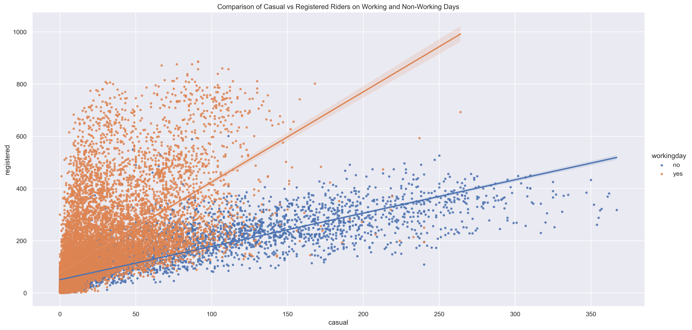
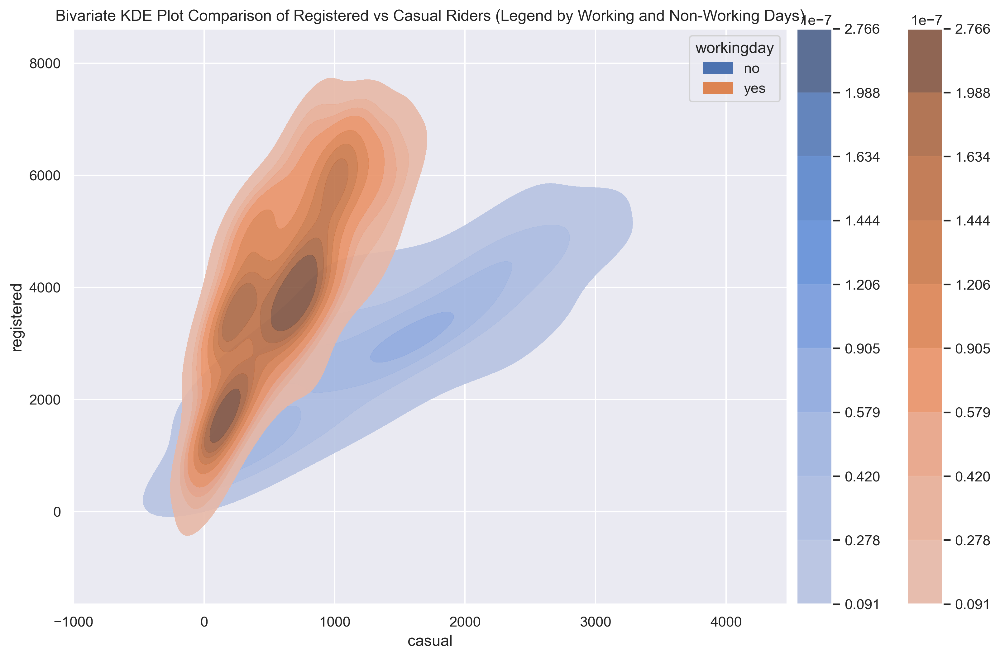
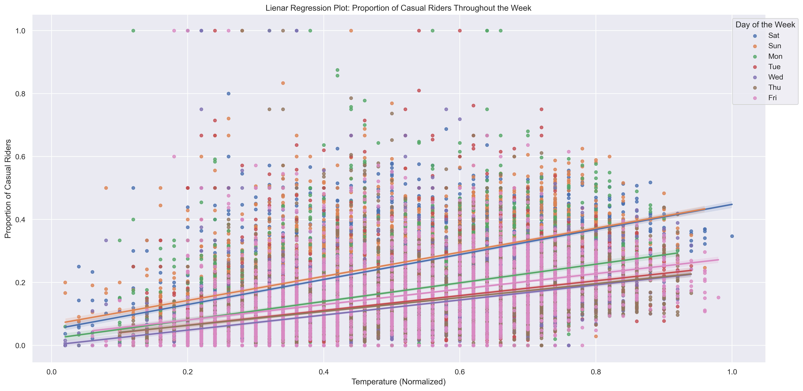

üìà Methods and Visualizations
1. Scatterplot of Casual vs Registered Riders
A scatterplot was used to compare casual and registered ride volumes across the full dataset. A positive but non-linear trend suggests that increased casual use often correlates with increased registered use, though at different scales.
2. LOWESS Smoothing
Locally Weighted Scatterplot Smoothing (LOWESS) was applied to reveal underlying trends in noisy data. This helped isolate the general pattern without assuming a specific model. The temperature relationship with casual ridership was most evident on weekends.

3. KDE Density Plot (Working Days Only)
Kernel Density Estimation (KDE) visualized the joint distribution of casual and registered riders on working days. The contours represent areas of higher density, indicating where the counts of casual and registered riders are most concentrated. The densest region suggests that most days have a moderate number of both casual and registered riders. The marginal distributions on the top and right show the individual density of casual and registered rider counts, respectively.

4. Overlay KDE Comparison (Workday vs Non-Workday)
Stacked KDE plots show how rider dynamics shift. Registered ridership dominates on working days while casual ridership peaks on non-working days.
5. Temperature Effects
Linear regression plots explores how normalized temperature impacts the proportion of casual riders across different days of the week. Warmer temperatures are strongly associated with higher casual ridership, especially on weekends.
6. Hourly Usage Patterns
This line plot compares hourly averages. Registered riders peak during morning and evening commute times. Casual riders are more active midday.